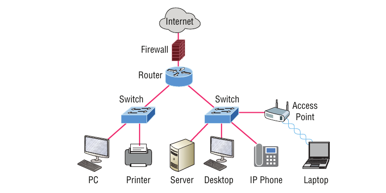

Libellé: Routage
Description:
Le routage est le processus par lequel un appareil réseau, généralement un routeur, sélectionne le meilleur chemin pour acheminer des paquets de données d'un point A vers un point B à travers différents réseaux interconnectés
Technologies utilisées : Les technologies de routage reposent sur une combinaison de matériels spécialisés, de protocoles intelligents et, de plus en plus, de solutions logicielles pour gérer le trafic à différentes échelles.
- IGP (Interior Gateway Protocols) : Utilisés à l'intérieur d'une organisation (ex: OSPF, EIGRP, RIP).
- EGP (Exterior Gateway Protocols) : Utilisés pour relier des réseaux massifs entre eux. Le standard mondial est le BGP (Border Gateway Protocol), qui fait fonctionner l'Internet
- Algorithmes de calcul : Les protocoles utilisent des algorithmes comme Dijkstra (pour l'état de lien) ou Bellman-Ford (pour le vecteur de distance) pour calculer le chemin le plus court ou le plus efficace